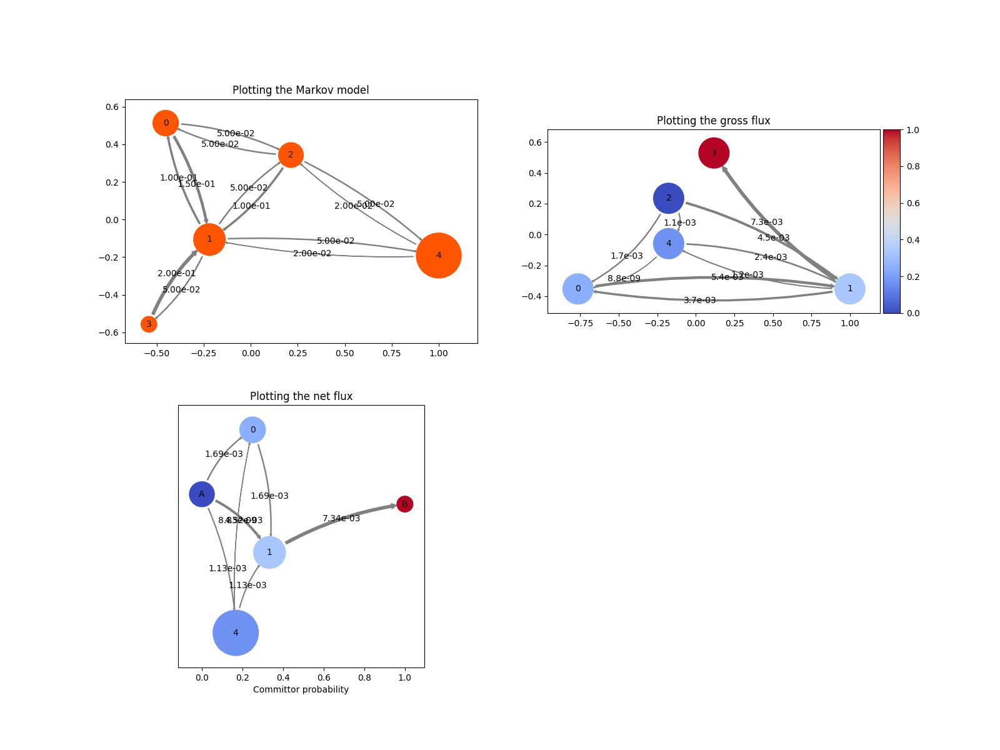

Note
Click here to download the full example code
Network plots¶
We demonstrate different kinds of network plots based on plots.Network.
In particular:

plotting a Markov state model where the state sizes depend on the stationary distribution and edges are scaled according to jump probabilities (
deeptime.plots.plot_markov_model())plotting the gross flux, in accordance to edge widths and colored according to the forward committor (
deeptime.plots.Network()).
13 import numpy as np
14 import matplotlib as mpl
15 import matplotlib.pyplot as plt
16 import networkx as nx
17
18 from mpl_toolkits.axes_grid1 import make_axes_locatable
19
20 from deeptime.markov.msm import MarkovStateModel
21 from deeptime.plots import plot_markov_model, Network, plot_flux
22
23 P = np.array([[0.8, 0.15, 0.05, 0.0, 0.0],
24 [0.1, 0.75, 0.05, 0.05, 0.05],
25 [0.05, 0.1, 0.8, 0.0, 0.05],
26 [0.0, 0.2, 0.0, 0.8, 0.0],
27 [1e-7, 0.02 - 1e-7, 0.02, 0.0, 0.96]])
28
29 f, axes = plt.subplots(2, 2, figsize=(16, 12))
30 for ax in axes.flatten():
31 ax.set_aspect('equal')
32
33 ax = axes[0][0]
34 ax.set_title('Plotting the Markov model')
35 plot_markov_model(P, ax=ax)
36
37 ax = axes[0][1]
38 ax.set_title('Plotting the gross flux')
39 flux = MarkovStateModel(P).reactive_flux(source_states=[2], target_states=[3])
40 positions = nx.planar_layout(nx.from_numpy_array(flux.gross_flux))
41 cmap = mpl.cm.get_cmap('coolwarm')
42 network = Network(flux.gross_flux, positions, edge_curvature=2.,
43 state_colors=flux.forward_committor, cmap=cmap)
44 network.plot(ax=ax)
45 norm = mpl.colors.Normalize(vmin=np.min(flux.forward_committor), vmax=np.max(flux.forward_committor))
46 divider = make_axes_locatable(ax)
47 cax = divider.append_axes("right", size="5%", pad=0.05)
48 f.colorbar(mpl.cm.ScalarMappable(norm, cmap), cax=cax)
49
50 ax = axes[1][0]
51 ax.set_title('Plotting the net flux')
52 ax.get_yaxis().set_visible(False)
53 plot_flux(flux, attribute_to_plot='net_flux', ax=ax)
54
55 f.delaxes(axes[1][1])
Total running time of the script: ( 0 minutes 1.127 seconds)
Estimated memory usage: 19 MB